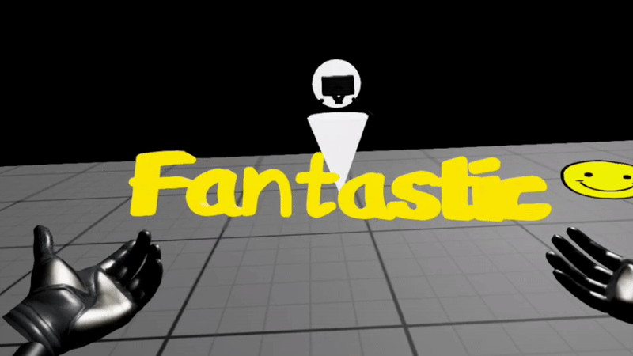
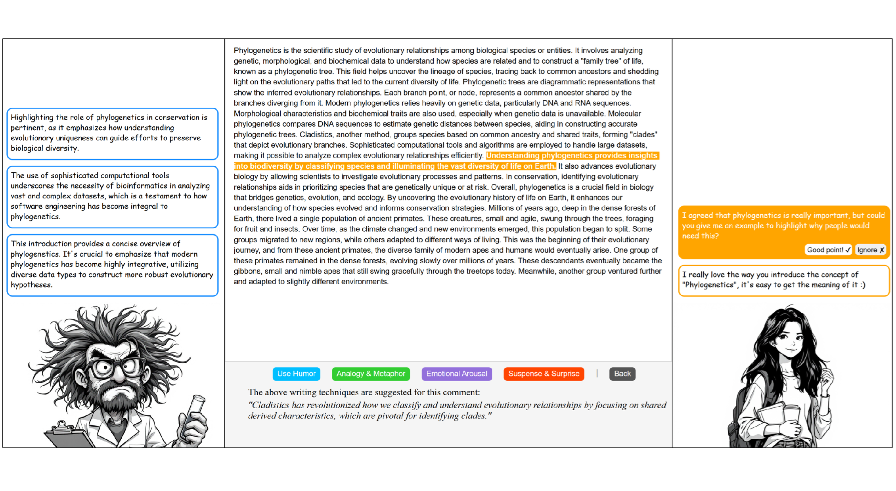
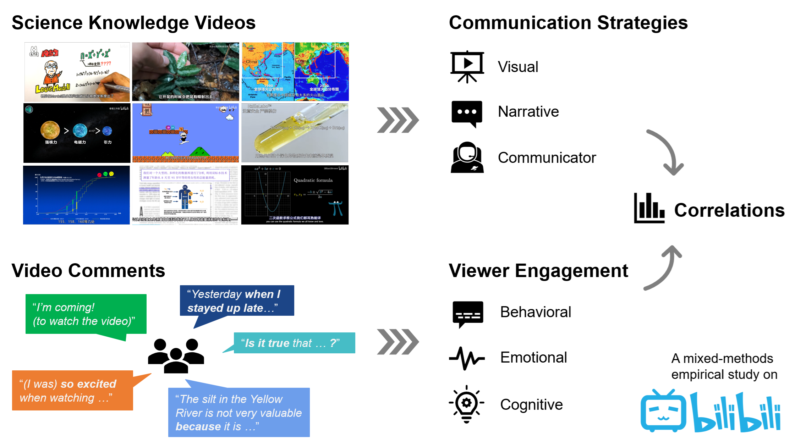
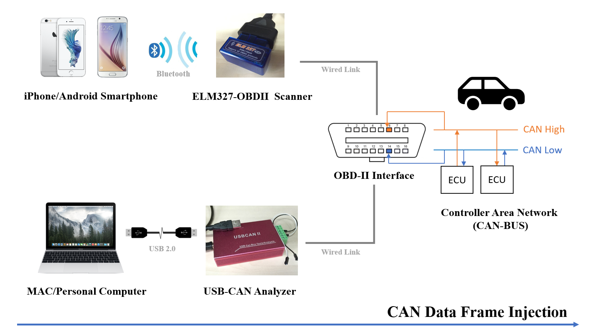

Yu ZHANG | Ph.D. Candidate in HCI
Hi there! I am Yu Zhang (张宇), a Ph.D. candidate at City University of Hong Kong.
My research interests lay on the intersection of human-computer interaction (HCI) and science communication. I am currently exploring the ways to apply digital technologies, such as virtual reality (VR) and generative artificial intelligence (GenAI), to support various tasks in science communication. I am supervised by Dr. Jiawei Ma at CityU, and co-supervised by Dr. Zhicong Lu . Besides, I am also advised by Dr. Yun Wang from Microsoft Research Asia (MSRA).
Previously, I received a master's degree in data science and professional computing at The Australian National University, and a bachelor's degree in computer science and technology at Beihang University (BUAA). Additionally, I used to be a full-stack software engineer at Thoughtworks.
I am seeking for a job in the industry or a postdoc opportunity relevant to topics such as human-AI co-creation, and VR/AR.
Latest News

Selected Publications



